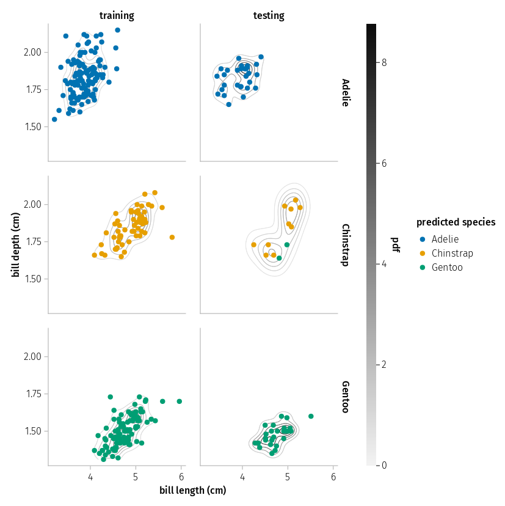
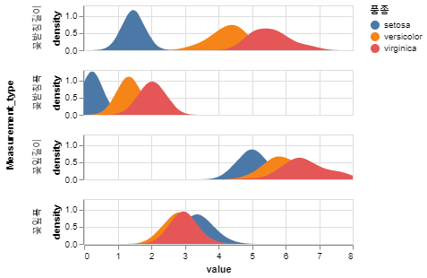
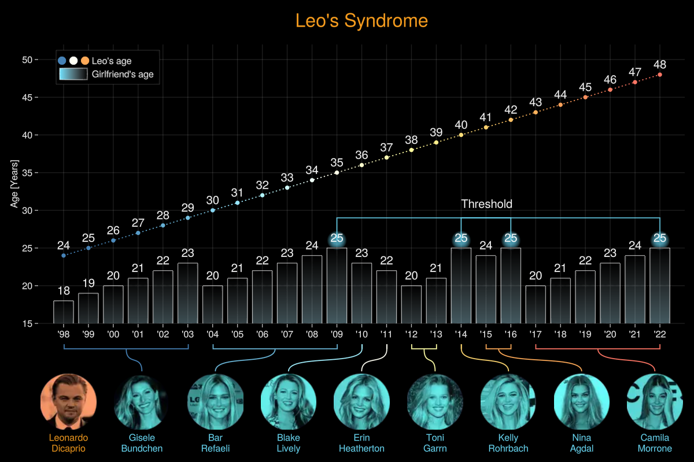
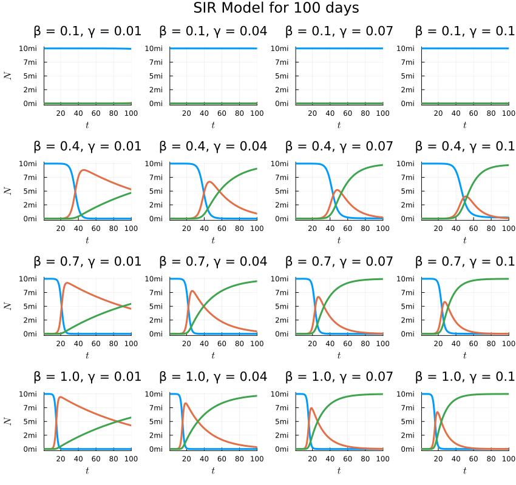
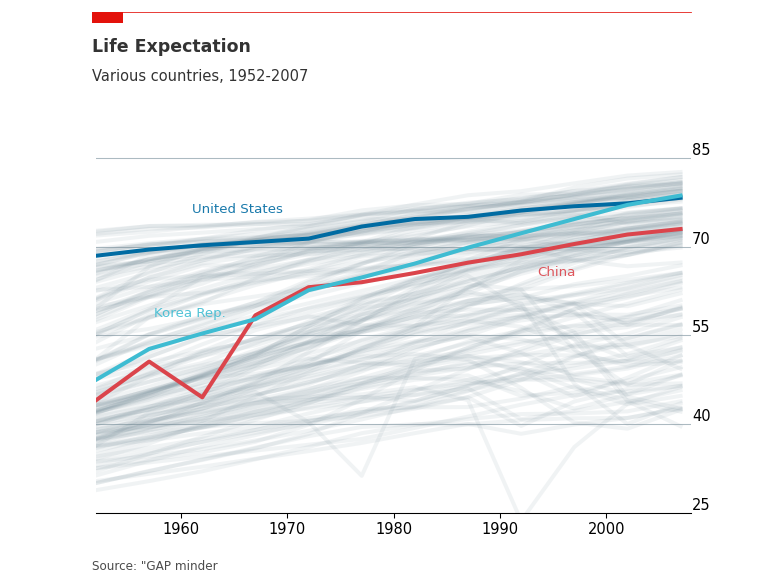

안녕하세요. 업무를 위한 데이터 과학 레시피를 작성하는 코다판다입니다.
Advacned Data anlytics Professional
from pyecharts.charts import Bar bar = Bar() bar.add_xaxis(["shirts", "cardigans", "chiffons", "trousers", "heels", "socks"]) bar.add_yaxis("Merchant A", [5, 20, 36, 10, 75…


DataFrame
json


